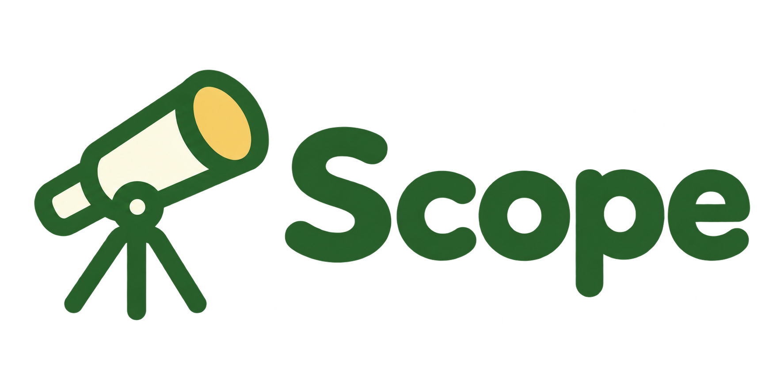

Co-founder
Simon Korsberg
Økonom med finansbakgrunn og erfaring fra EIK Servering og Azets.

Om Scope
Simon jobbet sju år med regnskap og så hvor mye data restauranter satt på uten å få brukt den. Det er problemet vi løser.
Co-founder
Økonom med finansbakgrunn og erfaring fra EIK Servering og Azets.

Co-founder
Samfunnsøkonom og analytiker med kunden i sentrum.

Co-founder
Byggingeniør med bakgrunn som tømrer og erfaring fra HENT AS.
Vi bygger Scope sammen med kundene våre, og følger opp underveis.
Prøv Scope gratis med dine egne tall. Ingen binding.